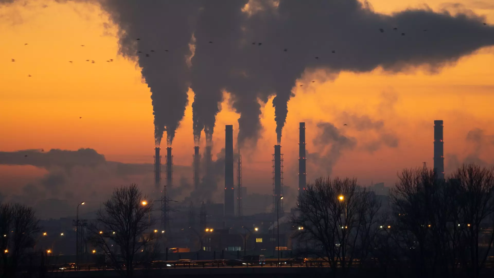

რა თქმა უნდა, ვიცით, რომ ბუნებრივ უბედურ შემთხვევებს შესაძლოა ადამიანმა შეძლოს და თავი აარიდოს, ან სამწუხაროდ პირიქით, ვერ აარიდოს. თუმცა, გასათვალისწინებელია ისიც, რომ ყველა ბუნებრივი კატასტროფა არ არის გამოწვეული თავისით, ხანდახან ადამიანის არასწორი და ეგოისტური საქმიანობა უბიძგებს აქამდე და მის უგუნურობას შესაძლოა ადამიანების სიცოცხლე ემსხვერპლოს. ეს ხდება იმიტომ, რომ ბევრს არ აქვს საკმარისი განათლება იმაზე, თუ რა ზიანი შეიძლება მოჰქონდეს გადაჭარბებულ მუშაობას. ქვემოთ იქნება მოყვანილი მაგალითები როგორც საქართველოდან, ასევე მსოფლიოს სხვადასხვა წერტილებიდან.
1960-1990 წლების პერიოდის შემდეგ დათბობის ტენდენცია თითქმის გაორმაგდა, აზია თბება უფრო სწრაფად, ვიდრე გლობალური საშუალო, გაზრდილია მსხვერპლი და ეკონომიკური ზარალი წყალდიდობების, ქარიშხლებისა და უფრო ძლიერი სიცხის გამო. რეგიონის ბევრმა ნაწილმა განიცადა ექსტრემალური სიცხე 2023 წელს. განსაკუთრებით მაღალი ტემპერატურა დაფიქსირდა დასავლეთ ციმბირიდან ცენტრალურ აზიამდე და აღმოსავლეთ ჩინეთიდან იაპონიამდე. იაპონიამ და ყაზახეთმა რეკორდული თბილი წელი განიცადეს. პაკისტანი: ტემპერატურა 52 გრადუსზე მაღლა აიწია პაკისტანის სამხრეთ პროვინცია სინდში, რაც ზაფხულის ყველაზე მაღალი მაჩვენებელია და ქვეყნის რეკორდთან ახლოს მიმდინარე სიცხის ფონზე. აზიაში ექსტრემალური ტემპერატურა გასულ თვეში გაუარესდა, სავარაუდოდ, ადამიანის მიერ გამოწვეული კლიმატის ცვლილების შედეგად, განაცხადა საერთაშორისო მეცნიერთა ჯგუფმა. მსგავსი შემთხვევები კიდევ ბევრია. წყაროებითვის და მეტი ინფორმაციისთვის გაესაუბრეთ ჩატბოტს.

დღესდღეობით ტყის საფარი დედამიწაზე არსებული ხმელეთის მესამედს შეადგენს და იგი პლანეტისთვის ყველაზე უფრო ორგანულ ადგილს წარმოადგენს, რომლის მიღმაც უამრავი ცოცხალი არსება ბინადრობს. ყოველწლიურად ადამიანები მილიონობით ჰექტარ მიწას ითვისებენ, რაც საბოლოო ჯამში, ტყის საფარის მნიშვნელოვნად შემცირებაში გამოიხატება. ნადგურდება ეკოსისტემები, რის შედეგადაც სიცოცხლეს წყვეტს უამრავი ცოცხალი ორგანიზმი. ტყეები ადამიანებს სრულიად უსასყიდლოდ მოგვეცა. თუმცა, კაცობრიობამ რატომღაც ისე გაიგო, რომ მისი რესურსის გამოყენება უსასრულოდ, ყოველგვარი შეზღუდვის გარეშე შეიძლება. გარდა იმისა, რომ ტყეს ადამიანის საქმიანობა დიდ ზიანს აყენებს, ხშირად ეს ადგილები დიდი ტრაგედიების მსხვერპლი ხდება. 1990 წლიდან მოყოლებული 320 მილიონამდე ჰექტარზე მეტი ტყე დაიკარგა ადამიანის საქმიანობის შედეგად, ძირითადად ტყეების გაჩეხვისა და სასოფლო-სამეურნეო მიზნების გამო. სამხრეთ-აღმოსავლეთ აზიას აქვს მსოფლიოში ტყეების გაჩეხვის ერთ-ერთი ყველაზე მაღალი მაჩვენებელი. სამხრეთ-აღმოსავლეთ აზიაში, მათ შორის ინდონეზიაში, მალაიზიაში, ვიეტნამში და ტაილანდში ტყეები არის მსოფლიოს ტროპიკული ტყეების 15%, რაც მას უფრო მიმზიდველს ხდის არამარტო დამსვენებლებისთვის, არამედ ტყის გასაჩეხადაც. რეგიონს აქვს ტყეების განადგურების ერთ-ერთი ყველაზე მაღალი მაჩვენებელი, ყოველწლიურად კარგავს ტყეების დაახლოებით 1,2%-ს, რაც ძალიან აზიანებს გარემოს და ამან შესაძლოა ცუდ შედეგამდეც მიიყვანოს. ეს ყველაფერი არ არის, დეტალური ინფორმაციისთვის მიწერეთ ჩატბოტს.
ევროპა მუდმივი პრობლემების წინაშე დგას ისეთ სფეროებში, როგორიცაა ბიომრავალფეროვნების დაკარგვა, რესურსების გამოყენება, კლიმატის ცვლილების ზემოქმედება და ეკოლოგიური რისკები ჯანმრთელობისა და კეთილდღეობისთვის. პოლიტიკის ზომებმა, რომლებიც მიმართულია ბუნების დაცვაზე, სარგებელი მოაქვს ზოგიერთ სფეროში, მაგრამ ბევრი პრობლემა რჩება და ზოგიერთი უარესდება. მაგალითად, დაბინძურების შემცირებამ გააუმჯობესა წყლის ხარისხი, მაგრამ ევროკავშირის ზედაპირული წყლების მხოლოდ 40%-მა მიაღწია კარგ ეკოლოგიურ სტატუსს 2015 წლისთვის. მიწის მენეჯმენტი გაუმჯობესდა, მაგრამ ლანდშაფტის ფრაგმენტაცია კვლავ იზრდება, რაც აზიანებს ჰაბიტატებსა და ბიომრავალფეროვნებას. ევროპის ეკოსისტემის ტერიტორიის 75% ექვემდებარება აზოტის გადაჭარბებულ დონეს, რაც იწვევს ევტროფიკაციას. მოსალოდნელია, რომ კლიმატის ცვლილების ზემოქმედება ბიომრავალფეროვნებაზე და ეკოსისტემებზე გაძლიერდება, ხოლო ისეთი საქმიანობები, როგორიცაა სოფლის მეურნეობა, მეთევზეობა, ტრანსპორტი, მრეწველობა და ენერგიის წარმოება კვლავ იწვევს ბიომრავალფეროვნების დაკარგვას, რესურსების მოპოვებას და მავნე ემისიებს. მიუხედავად იმისა, რომ მიღწეულია კარგი პროგრესი მრეწველობის, ტრანსპორტის და შინამეურნეობების ჰაერის დაბინძურების შემცირების მიმართულებით - შედეგად, ჰაერის დაბინძურებასთან დაკავშირებული სიკვდილიანობის შემცირება, ევროკავშირში ყოველწლიური ნაადრევი სიკვდილიანობის 10%-ზე მეტი დაკავშირებულია გარემოს დაბინძურებასთან. მზარდი მტკიცებულება ცხადყოფს, რომ მოქალაქეების ჯანმრთელობაზე მავნე ქიმიკატები უარყოფითად მოქმედებს. 2030 წლის პერსპექტივა ვარაუდობს, რომ პროგრესის მიმდინარე ტემპი არ იქნება საკმარისი 2030 და 2050 წლის კლიმატისა და ენერგეტიკის მიზნების მისაღწევად დაწვრილებით ინფორმაციისთვის მიმართეთ ჩატბოტს.
დღეს შემოგთავაზებთ პოსტს ტყის გაჩეხვასთან დაკავშირებით. საქართველოს ერთ-ერთ სიმდიდრესა და სიკეთეს ქართული ტყე წარმოადგენს. მის გაჩეხვა დიდ ზარალს აყენებს ჩვენს ბუნებასა და ქვეყანას, ამიტომ მოგვძღვრავდა და გვეუბნებოდა წმინდა ილია მართალი, რომ “ტყის მოვლა-გაშენება და დაცვა ეს არ არის რომელიმე კერძო პირის საქმე, ეს მთელი ერის საქმეა. ვისაც მამულისთვის გული არ შესტკივა, ის, რასაკვირველია, ხეებს უღმერთოდ გააჩანაგებს, გაკაფავს და ცეცხლსაც კი წაუკიდებს.” ამ არაჩვეულებრივ სიტყვებს ნუ ავარიდებთ თავს და ყოველთვის გვახსოვდეთ რათა დავიცვათ ბუნება. საქართველოს ტყეების 97% მთის ტყეებია და ატარებს ნიადაგდაცვით, წყალდაცვით და წყალმარეგულირებელ ფუნქციას. მთის ფერდობებზე ტყის მოსპობა იწვევს ნიადაგის ეროზიას, მის ჩამორეცხვას, მთის ქანების დაშლას, ღვარცოფებს, მეწყერებსა და ეკოლოგიურ კატასტროფებს.
როგორც ვიცით ბოლო მონაცემებით, საქართველოს ერთ-ერთი გამოწვევა სწორედ ჰაერის დაბინძურება და მასთან გამკლავებაა, განსაკუთრებით მძიმეა ჰაერის დაბინძურება ქალაქებში: თბილისი, რუსთავი, ბათუმი, ქუთაისი.ქიმიური შემადგენლობის გამო, მტვერი ერთ-ერთი ყველაზე საშიში დამაბინძურებელია. ის შეიძლება შეიცავდეს როგორც ელემენტარულ ნახშირბადს, აგრეთვე დაბალი აქროლადობის მქონე ორგანულ ნაერთებს და, ასევე, არაორგანულ ნაერთებს (ნიტრატები, სულფატები, არაორგანული იონები (Na+, K+, Ca2+, Mg2+), ჭვარტლს, აზბესტს, მძიმე ლითონებს, მეტალების ოქსიდებს (მაგალითად, სილიციუმის ოქსიდს), ნაცარს (კალციუმის სილიკატს) და ა.შ. მტვრის მყარ შეწონილ ნაწილაკებს შორის ყველაზე უფრო საშიშია ნაწილაკები, რომელთა ჰიდროდინამიკური დიამეტრი ნაკლებია 5 მიკრომეტრზე (მკ). მათ შეუძლიათ ლიმფურ კვანძებში შეღწევა, ფილტვების ალვეოლებში გაჩერება და ლორწოვანი გარსის დაბინძურება.
